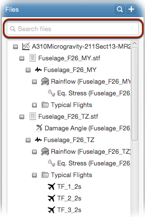

Often, you will have many files in your local database. This may pose difficulties in finding the files you want. Following video demonstrates how to do this.
In those occasions, you can use the search area located just above the file tree in order to search and filter files.

As you will recognize, the search results will be narrowed progressively as you type
your search keywords. File type filters will also be displayed to further narrow the results to a certain file type.
You can directly filter files having the same name as the selected file via right-clicking on a file and selecting
Find Similar Files option from the popup menu as shown the following figure.